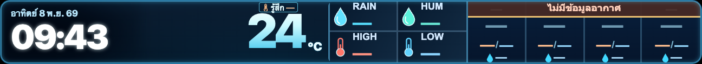
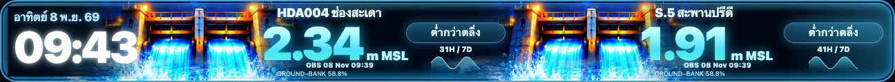

UTH LED · VISUAL REVIEW CANDIDATE · 8 NOV 2026
ปรับความชัดของ °C และกราฟ Water Level
แก้ไขเฉพาะการจัดวางของสองหน้า โดยคงข้อมูลจริง, แหล่งข้อมูล, เวลาอ้างอิง, เกณฑ์สถานะ, การหมุนเวียนหน้า และ PM2.5 เดิมไว้
SIMULATED QA — ตัวเลขในภาพเป็นข้อมูลจำลองสำหรับทดสอบการแสดงผล ไม่ใช่ค่าตรวจวัดปัจจุบัน
ภาพทั้งหมดสร้างจาก renderer ของเว็บจริงใน Candidate Branch ยังไม่ได้ Merge หรือ Deploy สู่ Production
1. Weather — °C ห้อยท้ายตัวเลข
เดิมเครื่องหมายองศาถูกบีบโดยระยะติดลบและยกสูงเกินไป ตอนนี้วาง °C หลังตัวเลขด้วยสีทึบและเว้นช่องว่าง โดยไม่บังส่วน Forecast 4+3 วัน

SIMULATED · 24°C · ตรวจเครื่องหมาย ° ก่อน C และช่องว่างจากตัวเลข
2. Water Level — กราฟและหน่วยมาตรฐาน
กราฟเดิมสั้น เพราะใช้แกนเวลาเต็ม 7 วัน ทั้งที่มีข้อมูลจริงครอบคลุมไม่ถึง 2 วัน จึงปรับความยาวให้พอดีกับ ช่วงเวลาที่มีข้อมูลจริง พร้อมบอกระยะเวลาที่มีอยู่ ไม่เติมข้อมูลที่ขาด

SIMULATED · HDA004 31H / 7D · S.5 41H / 7D · 30 ข้อมูลต่อสถานี
m MSL metre(s) relative to Mean Sea Level — เมตรเทียบระดับทะเลปานกลาง (ม.รทก.) ไม่ได้เปลี่ยนค่าตัวเลข
31H / 7D มีข้อมูลครอบคลุม 31 ชั่วโมง ภายในช่วงที่ระบบค้นย้อนหลังได้สูงสุด 7 วัน — ไม่ได้หมายถึงมีข้อมูลครบ 7 วัน
OBS Observed — เวลาอ้างอิงการตรวจวัดจากแหล่งข้อมูล ไม่ใช่เวลาโหลดหน้าเว็บ
GROUND–BANK สัดส่วนช่วงระดับพื้นอ้างอิงถึงตลิ่งต่ำสุด ไม่ใช่เปอร์เซ็นต์ความเสี่ยงน้ำท่วม
ชื่อสถานีและป้ายเทียบตลิ่งยังเป็นภาษาไทย เพื่อให้สื่อความหมายด้านความปลอดภัยชัดเจนตามเดิม